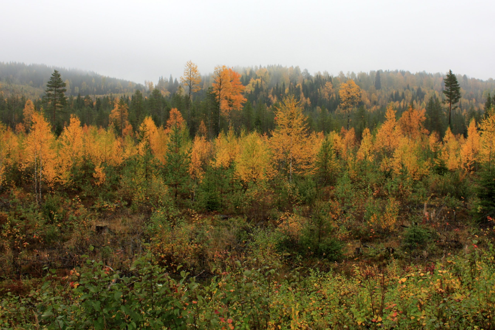

Karhunkierros sijaitsee pääasiassa Oulangan kansallispuiston alueella eli Sallan ja Kuusamon kuntien alueella. Kansallispuisto on Lapin ja Pohjois-Pohjanmaan maakuntien rajamaastossa.
Lähin rautatieasema on 130 kilometrin päässä Kemijärvellä. Lähin lentoasema on Kuusamossa. Oulusta ja Rovaniemeltä on kuitenkin parhaimmat bussiyhteydet alueelle. Myös omalla autolla voi saapua alueelle.
 Lue aiheesta lisää Metsähallituksen sivuilta